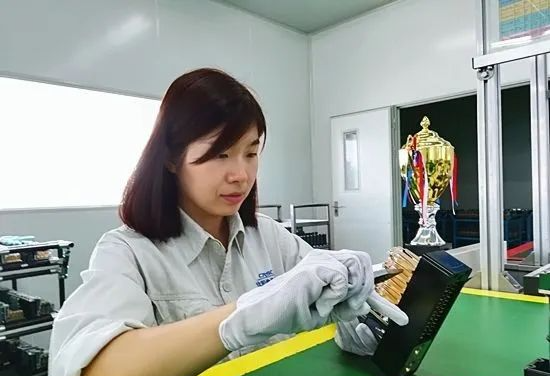
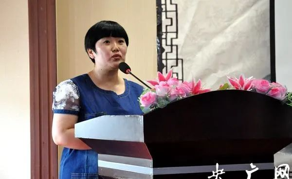

| 人物 | 图片 | 事迹 |
|---|---|---|
| 陈玲玲：解读“生命之书” | “站在科研前沿，要敢于领跑创新，勇于向上攀登，不断探索未知领域。做出具有自主知识产权、国际领先的科研成果，是我们这代中国科研人的使命。”陈玲玲说。 | |
| 柯晓宾：精益求精铸就中国高铁标准 |  | 柯晓宾：信号控制系统是高铁的“中枢神经”，不但国内高铁，中老铁路、雅万高铁等我国在国外的铁路项目都有我们沈信生产的继电器，它们都是我们车间每一个普通工人亲手调整出来的。 |
| 李鹏：甘当金融星星火 愿做服务燎原人 |  | “甘当金融星星火，愿做服务燎原人”，这是李鹏一直以来的追求，此次当选党的二十大代表，对她来说不仅是荣誉，更重要的是责任。 |
| 徐梦桃：突破极限 用坚韧书写冰雪传奇 | 徐梦桃：我感觉它已经是我的朋友了，我已经不把它当成困难去解决了。只要能拿到这块金牌，你让我做什么我都认了。 |